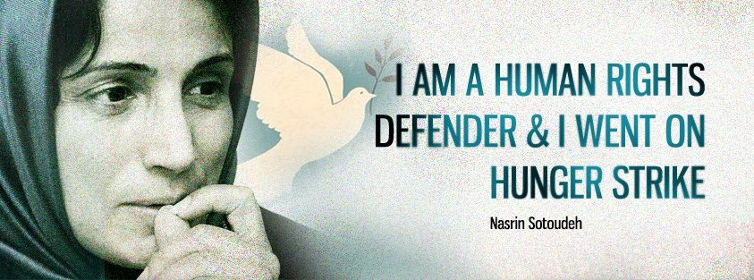

|
|

بازی دادستانی تهران با فرزندان نسرین ستوده
يكشنبه21 آبان 1391

تغییر برای برابری: وعده دادستانی تهران برای ملاقات حضوری نسرین ستوده با فرزندانش باز هم محقق نشد.
امروز در بیست و ششمین روز اعتصاب غذای نسرین ستوده، نگرانی از وضعیت نسرین ستوده دو چندان شد.
رضا خندان، همسر نسرین ستوده، در صفحه فیس بوک خود اطلاع داده است که امروز از دادستانی به او اطلاع داده اند که می تواند بچه ها را به ملاقات حضوری با مادرشان ببرد. اما پس از سه ساعت و نیم انتظار پشت دراصلی زندان اوین اجازه ملاقات به آنها داده نشد.
رضا خندان نوشته است: "سالن ملاقات كه هميشه با نامهي دادستاني ملاقات حضوري ميدهد اعلام كرد كه ملاقات شما از درب اصلي زندان و محلي كه زندانيان رفت و آمد ميكنند بايد صورت بگيرد. با اين حال درب اصلي نامهي دادستاني را از ما گرفت و درست سه ساعت و نيم ما را مقابل زندان منتظر گذاشت. سرفههاي آسم نيما كه سرما خورده است در هواي آلودهي آنجا شروع شد. بخش اداري زندان تعطيل شد و يك ساعت پس از تعطيلي زندان دست از پا درازتر برگشتيم. سه ساعت و نيم چشم بچهها به در زندان بود و با هردفعه باز و بسته شدن منتظر بودند كه آنها را براي ملاقات صدا كنند. اما هيچوقت اين اتفاق نيفتاد."
نسرین ستوده چهار ماه است که با فرزندانش ملاقات حضوری نداشته است.
نسرین ستوده به خاطر اعتصاب غذا به مدت بيست روز تنبیهی به سلول انفرادي فرستاده شده بود که اکنون 10 روز آن سپری شده است. رضا خندان در گفتگو با تغییر برای برابری می گوید:« دوشنبه گذشته با رييس زندان صحبت كردم و گفتم ملاقات بدهید تا تشويقش كنم اعتصاب اش را بشكند. البته نسرین را ملاقات كردم ولي حاضر نشد اعتصابش را بشكند.
خيلي شرايط بدي در انفرادي دارد. خودش هم كه بیش از حد ضعيف شده است.»